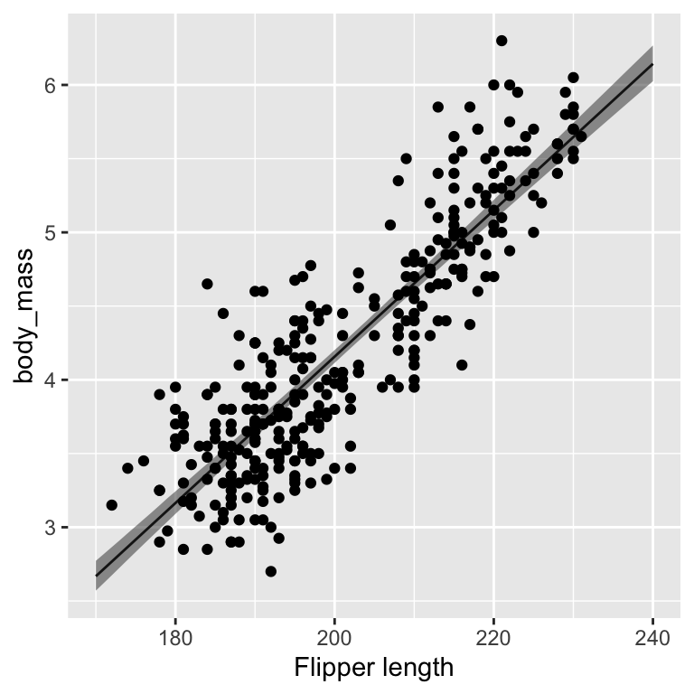
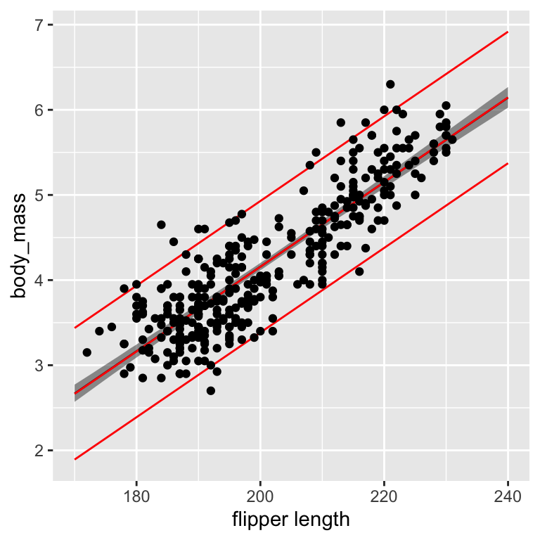
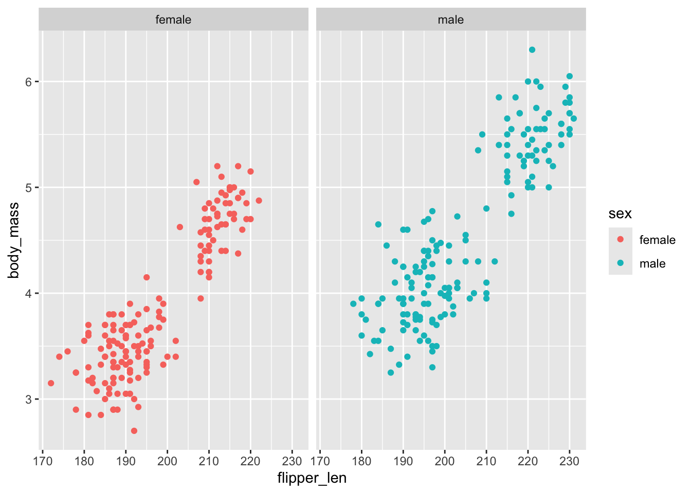
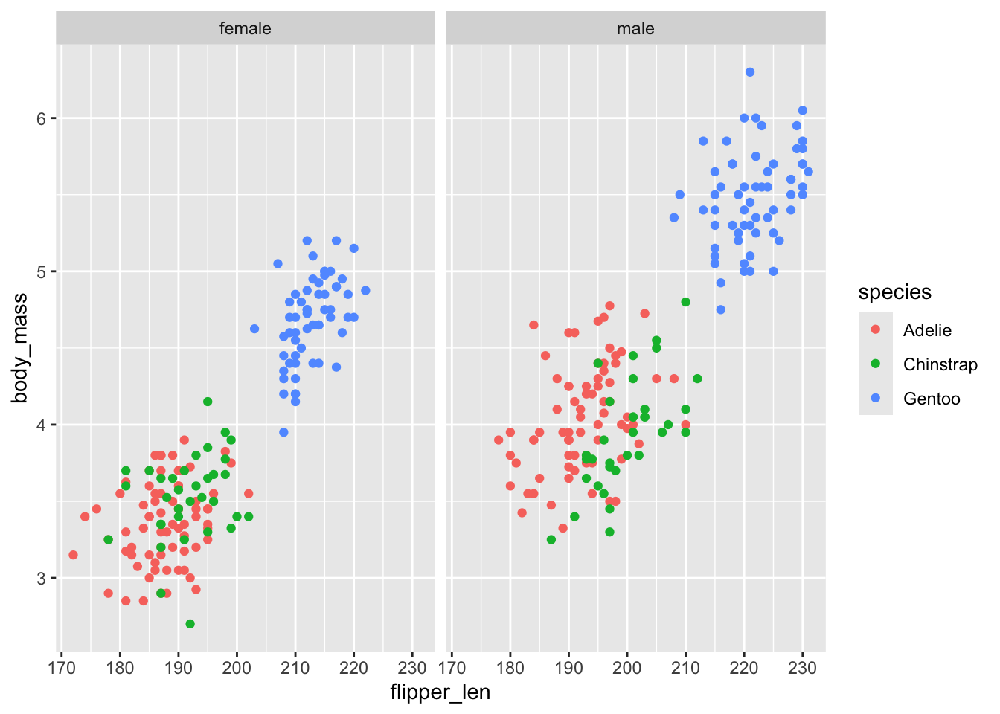

library(INLA)
library(patchwork)
library(inlabru)
library(car)
library(tidyverse)
# load some libraries to generate nice plots
library(scico)Practical 1 - Linear (Mixed) Models
In this practical we are going to fit linear (mixed) models in inlabru. We are going to to:
- Fit a simple linear regression
- Fit a linear regression with discrete covariates and interactions
- Fit a linear mixed model.
- Compare models using DIC and WAIC
Start by loading useful libraries:
At the end of this exercise we are going to compare the different models we fit using DIC and WAIC. Therefore we neet to tell the bru() function to compute those scores, we can do that by the bru_options_set() functions:
bru_options_set(control.compute = list(dic = T, waic = T))This is a global option that will make bru() compute scores everytime. It is also possble to set the option locally as
fit = bru(cmp, lik,
options = list(control.compute = list(dic = TRUE)))Simple linear regression
We consider a simple linear regression model with Gaussian observations
\[ y_i\sim\mathcal{N}(\mu_i, \sigma^2), \qquad i = 1,\dots,N \]
where \(\sigma^2\) is the observation error, and the mean parameter \(\mu_i\) is linked to the linear predictor (\(\eta_i\)) through an identity function: \[ \eta_i = \mu_i = \beta_0 + \beta_1 x_i. \]
Here \(\mathbf{x}= (x_1,\dots,x_N)\) is a continuous covariate and \(\beta_0, \beta_1\) are parameters to be estimated.
To finalize the Bayesian model we assign prior distribution as \(\tau = 1/\sigma^2\sim\text{Gamma}(a,b)\) and \(\beta_0,\beta_1\sim\mathcal{N}(0,1/\tau_{\beta})\) (we will use the default prior settings in INLA for now).
Note
We can write the linear predictor vector \(\pmb{\eta} = (\eta_1,\dots,\eta_N)\) as
\[ \pmb{\eta} = \pmb{A}\pmb{u} = \pmb{A}_1\pmb{u}_1 + \pmb{A}_2\pmb{u}_2 = \begin{bmatrix} 1 \\ 1\\ \vdots\\ 1 \end{bmatrix} \beta_0 + \begin{bmatrix} x_1 \\ x_2\\ \vdots\\ x_N \end{bmatrix} \beta_1 \]
Our linear predictor consists then of two components: an intercept and a slope.
Modelling penguins bodymass
Let’s look at the dataset penguins in R.
These are data on adult penguins covering three species found on three islands in the Palmer Archipelago, Antarctica, including their size (flipper length, body mass, bill dimensions), and sex.
Get body_mass data
data("penguins")
glimpse(penguins)Rows: 344
Columns: 8
$ species <fct> Adelie, Adelie, Adelie, Adelie, Adelie, Adelie, Adelie, Ad…
$ island <fct> Torgersen, Torgersen, Torgersen, Torgersen, Torgersen, Tor…
$ bill_len <dbl> 39.1, 39.5, 40.3, NA, 36.7, 39.3, 38.9, 39.2, 34.1, 42.0, …
$ bill_dep <dbl> 18.7, 17.4, 18.0, NA, 19.3, 20.6, 17.8, 19.6, 18.1, 20.2, …
$ flipper_len <int> 181, 186, 195, NA, 193, 190, 181, 195, 193, 190, 186, 180,…
$ body_mass <int> 3750, 3800, 3250, NA, 3450, 3650, 3625, 4675, 3475, 4250, …
$ sex <fct> male, female, female, NA, female, male, female, male, NA, …
$ year <int> 2007, 2007, 2007, 2007, 2007, 2007, 2007, 2007, 2007, 2007…The dataset contains the following variables:
species a factor denoting penguin species (Adélie, Chinstrap and Gentoo)
island a factor denoting island in Palmer Archipelago, Antarctica (Biscoe, Dream or Torgersen)
bill_length a number denoting bill length (millimeters)
bill_depth_mm a number denoting bill depth (millimeters)
flipper_length an integer denoting flipper length (millimeters)
body_mass an integer denoting body mass (grams)
sex a factor denoting penguin sex (female, male)
year and integer indicating the study year: (2007, 2008, 2009)
We are going to use the bodymass as our response variable. To make the interpretation easier we are going to express the bodymass in Kg instead of grams.
penguins$body_mass = penguins$body_mass/1000Fitting a linear regression model with inlabru
In a first step we want to fit a simple linear regression model to link the body mass (body_mass) to flipper length (flipper_len).
\[ \begin{aligned} y_i & \sim\mathcal{N}(\mu_i,\sigma_y^2)\\ \mu_i & = \beta_0 + \beta_ix_i \end{aligned} \] where \(y_i\) indicates the body mass and \(x_i\) the flipper length of penguin \(i\).
Step1: Defining model components
The first step is to define the two model components: The intercept and the linear covariate effect.
Note
Note that we have excluded the default Intercept term in the model by typing -1 in the model components. However, inlabru has automatic intercept that can be called by typing Intercept() , which is one of inlabru special names and it is used to define a global intercept, e.g.
cmp = ~ Intercept(1) + beta_1(flipper_len, model = "linear")another way to code this model would be to use the model = "fixed". In this case we would define the components as:
cmp = ~ -1 + effects(~ flipper_len, model = "fixed")NOTE In the following we are going to use this last way of defining the components!
Step 2: Build the observation model
The next step is to construct the observation model by defining the model likelihood. The most important inputs here are the formula, the family and the data.
The likelihood for the observational model is defined using the bru_obs() function.
Step 3: Fit the model
We fit the model using the bru() functions which takes as input the components and the observation model:
fit1 = bru(cmp, lik)NOTE running the code above we are going to get an error !!
This error is liked to the fact that, when using model = "fixed" the default option for model.matrix() is to remove all lines with NAs.
NAs are not a problem in inlabru they just don’t make any contribtion to the likelihood….but matrix of the wrong dimension are :smile:.
To avoid this we can tell R to keep all missing values as follows:
options(na.action = 'na.pass')
fit1 = bru(cmp, lik)Step 4: Extract results
There are several ways to extract and examine the results of a fitted inlabru object.
The most natural place to start is to use the summary() which gives access to some basic information about model fit and estimates
summary(fit1)
## inlabru version: 2.13.0.9033
## INLA version: 26.02.06
## Latent components:
## effects: main = fixed(~flipper_len)
## Observation models:
## Model tag: <No tag>
## Family: 'gaussian'
## Data class: 'data.frame'
## Response class: 'numeric'
## Predictor: body_mass ~ effects
## Additive/Linear/Rowwise: TRUE/TRUE/TRUE
## Used components: effect[effects], latent[]
## Time used:
## Pre = 0.64, Running = 0.351, Post = 0.022, Total = 1.01
## Random effects:
## Name Model
## effects IID model
##
## Model hyperparameters:
## mean sd 0.025quant 0.5quant
## Precision for the Gaussian observations 6.47 0.495 5.54 6.46
## 0.975quant mode
## Precision for the Gaussian observations 7.48 6.43
##
## Deviance Information Criterion (DIC) ...............: 337.94
## Deviance Information Criterion (DIC, saturated) ....: 347.38
## Effective number of parameters .....................: 2.99
##
## Watanabe-Akaike information criterion (WAIC) ...: 337.90
## Effective number of parameters .................: 2.92
##
## Marginal log-Likelihood: -192.93
## is computed
## Posterior summaries for the linear predictor and the fitted values are computed
## (Posterior marginals needs also 'control.compute=list(return.marginals.predictor=TRUE)')Another way, which gives access to more complicated (and useful) output is to use the predict() function.
Below we take the fitted bru object and use the predict() function to produce predictions for \(\eta\) given a new set of values for the years of service
new_data = data.frame(flipper_len = 170:240)
pred = predict(fit1, new_data, ~ effects,
n.samples = 1000)The predict() function generate samples from the fitted model and then summarizes those samples by computing some statistics like posterior mean, standard deviation, quantiles etc. In this case we set the number of samples to 1000.
We can plot the predictions for \(\eta\) together with the observed data:
Plot

NOTE: The uncertainty we have computed now is relative to the prediction of \(\eta\). If we want to predict new body mass, we need to add the observation (likelihood) uncertainty \(\sigma_y^2\). We can do this using predict() again:
new_data = data.frame(flipper_len = 170:240)
pred1 = predict(fit1, new_data,
formula = ~ { eta = effects
sigma = sqrt(1/Precision_for_the_Gaussian_observations)
list(mean = eta,
q1 = qnorm(0.025, mean = eta, sd = sigma),
q2 = qnorm(0.975, mean = eta, sd = sigma))
},
n.samples = 1000)Let’s compare the two predictions:

NOTE Now we have produced a credible interval for the expected mean \(\eta\) if we want to produce a prediction interval for a new observation \(y\) we need to add the uncertainty that comes from the likelihood with precision \(\tau = 1/\sigma_y^2\). To do this we can again use the predict() function to compute a 95% prediction interval for \(y\).
pred2 = predict(fit1, new_data,
formula = ~ {
mu = effects
sigma = sqrt(1/Precision_for_the_Gaussian_observations)
list(q1 = qnorm(0.025, mean = mu, sd = sigma),
q2 = qnorm(0.975, mean = mu, sd = sigma))},
n.samples = 1000)
round(c(pred2$q1$mean, pred2$q2$mean),2)[1] 3.04 4.58Notice that now the interval we obtain is much bigger! ahahah
Linear model with discrete variables and interactions
Now we want to check if there is any difference, both in mean body_mass and in mean increase of the body_mass with flipper length, between males and females
To do this we have to fit a model with interactions:
\[ \begin{aligned} y_i & \sim \mathcal{N}(\eta_i, \sigma_y^2)\\ \eta_i & = \beta_0 + \beta_{0,\text{Male}} + \beta_1 x_i + \beta_{1,\text{Male}} x_i \end{aligned} \]
Let’s first look at an exploratuve plot
penguins %>%
filter(!is.na(sex)) %>%
ggplot() + geom_point(aes(flipper_len, body_mass, color= sex)) +
facet_wrap(.~sex)
We fit the model using the model = "fixed" option.
cmp = ~ -1 + effects( ~ sex*flipper_len, model = "fixed")
formula = body_mass ~ .
lik = bru_obs(formula = formula,
data = penguins
)
fit2 = bru(cmp, lik)We can get the results looking at the summary.random object as follows:
fit2$summary.random$effects
ID mean sd 0.025quant 0.5quant
1 (Intercept) -5.2560419315 0.423683127 -6.087343982 -5.2560447990
2 sexmale 0.2188495010 0.575523540 -0.910395725 0.2188524648
3 flipper_len 0.0462183314 0.002141407 0.042016627 0.0462183459
4 sexmale:flipper_len 0.0006403378 0.002862713 -0.004976558 0.0006403229
0.975quant mode kld
1 -4.424723521 -5.2560447955 5.442482e-10
2 1.348077817 0.2188524611 5.440492e-10
3 0.050419953 0.0462183459 5.442672e-10
4 0.006257319 0.0006403229 5.440460e-10Another way to fit this model is to realize that a fixed effect can be seen as an iid effect with fixed precision, one of the inlabru ways to fit the model is:
cmp = ~ -1 + sex_intercept(sex, model = "iid", initial = log(0.001), fixed = T) +
sex_slope(sex, flipper_len, model = "iid", fixed = T, initial = log(0.001))
lik = bru_obs(formula = body_mass ~ .,
data = penguins %>% filter(!is.na(sex)))
fit2b = bru(cmp, lik)Notice that we fix the precision of the iid effect to the same value as the precision of the linear effects which is 0.001.
The fitted values can be inspected as
fit2b$summary.random$sex_intercept ID mean sd 0.025quant 0.5quant 0.975quant mode
1 female -5.442907 0.4399821 -6.306203 -5.442910 -4.579593 -5.442910
2 male -5.036399 0.3884272 -5.798540 -5.036401 -4.274245 -5.036401
kld
1 5.835819e-10
2 5.837102e-10fit2b$summary.random$sex_slope ID mean sd 0.025quant 0.5quant 0.975quant mode
1 female 0.04714741 0.002224866 0.04278187 0.04714742 0.05151285 0.04714742
2 male 0.04685481 0.001894586 0.04313734 0.04685482 0.05057221 0.04685482
kld
1 5.835703e-10
2 5.836619e-10The results from the fit2b model is not the same we get from the fit model. What is happening? It is just a matter of parametrization.
You can go from one parametrization to the other by using the predict() function as we saw earlier
Linear Mixed Model
When looking at the data we see that there are differences in body mass depending on the species.

To account for this we introduce species as a random effect in the model.
We now look at the results for the fixed effecs and compare with those from the previous model
fit3$summary.random$effects[,c(1,3,5)] ID sd 0.5quant
1 (Intercept) 0.719603259 0.421055519
2 sexmale 0.482494657 -0.475711581
3 flipper_len 0.003370573 0.017276904
4 sexmale:flipper_len 0.002412991 0.005011372fit2$summary.random$effects[,c(1,3,5)] ID sd 0.5quant
1 (Intercept) 0.423683127 -5.2560447990
2 sexmale 0.575523540 0.2188524648
3 flipper_len 0.002141407 0.0462183459
4 sexmale:flipper_len 0.002862713 0.0006403229Model comparison
As a by-product of the main computations inlabru can compute some scores that can be useful to compare models (we will talk more about this later in the course).
The easiest scores are the Deviance Information Criteria (DIC) and the Wakaike Information Criteria (WAIC).
These scores take into account goodness-of-fit and a penalty term that is based on the complexity of the model via the estimated effective number of parameters.
The lower the value of the score, the better the model is rated.
deltaIC(fit1, fit2, fit3, fit4, criterion = c("DIC","WAIC"))Warning in deltaIC(fit1, fit2, fit3, fit4, criterion = c("DIC", "WAIC")): WAIC
values from INLA are not well-defined for point process models. Use with
caution, or better, not at all.TRUE Model DIC Delta.DIC WAIC Delta.WAIC
1 fit4 147.3467 0.000000 147.1477 0.000000
2 fit3 148.4950 1.148285 148.3034 1.155735
3 fit2 272.9029 125.556149 272.6083 125.460614
4 fit1 337.9389 190.592130 337.8981 190.750479Practical 1 - Linear (Mixed) Models – inlabru Workshop Practical 1 - Linear (Mixed) Models – inlabru Workshop Practical 1 - Linear (Mixed) Models – inlabru Workshop inlabru Workshop